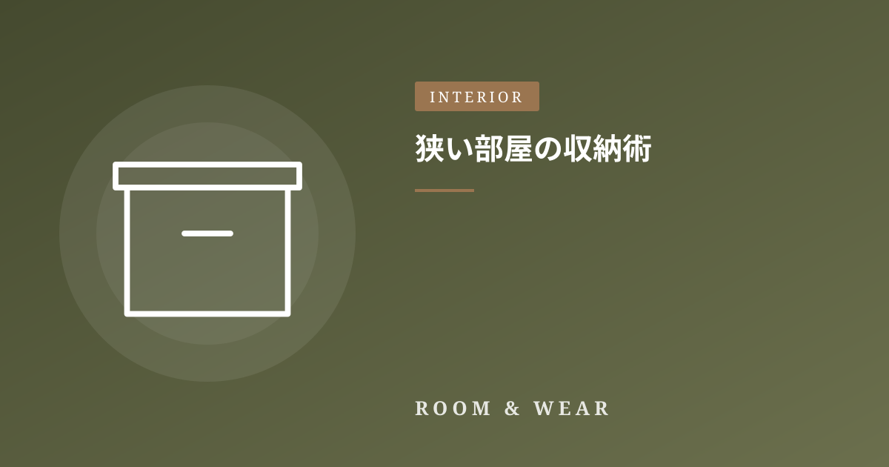

狭い部屋の収納術。「見せる収納」と「隠す収納」の使い分け

※この記事にはアフィリエイトリンクが含まれています（広告について）。
部屋が散らかって見える原因は、物の量だけではありません。「どこに・どう置くか」を決めておくと、同じ物の量でもすっきりした印象になります。
まず「見せる物」と「隠す物」を分ける
収納を考える前に、持ち物を2つに分けてみましょう。
- 見せる物：お気に入りの本、雑貨、グリーン、よく使う帽子やバッグなど
- 隠す物：日用品のストック、書類、ケーブル類、細かい小物など
見せる物は数を絞るのがコツ。並べる物が多すぎると、かえって散らかって見えます。
隠す収納は「ボックス」でそろえる
細かい物は、同じシリーズの収納ボックスにまとめると統一感が出ます。棚の中のボックスの色と形をそろえるだけで、扉がなくても整って見えます。中身がわかるように、ラベルを貼っておくと探し物も減ります。
デッドスペースを活用する
ベッド下
キャスター付きの収納ケースを使えば、シーズンオフの服や布団をしまえます。
壁面
賃貸でも使える突っ張り棚や、壁に穴をあけにくいピンで取り付けるフックを使えば、床に物を置かずに収納を増やせます。
ドアの裏
ドアにかけるタイプのフックやラックは、上着やバッグの一時置きに便利です。
「定位置」を決めて戻すだけにする
鍵・財布・イヤホンなど毎日使う物は、トレーやボックスで定位置を作っておきましょう。帰ってきたらそこに置くだけ、というルールにすると、散らかりにくい部屋が続きます。
まとめ
「見せる物は少なく、隠す物はボックスでそろえる」。この考え方で収納を見直すと、狭い部屋でもすっきり暮らせます。
この記事に関連するアイテムを探す
Amazonの検索結果ページに移動します。条件に合う商品を比較してお選びください。
- 収納ボックス（同シリーズ）Amazonで商品を探す
- ベッド下収納ケースAmazonで商品を探す
- 突っ張り棚Amazonで商品を探す
価格・在庫・仕様は変わることがあります。購入前にAmazonの商品ページで最新の情報をご確認ください。